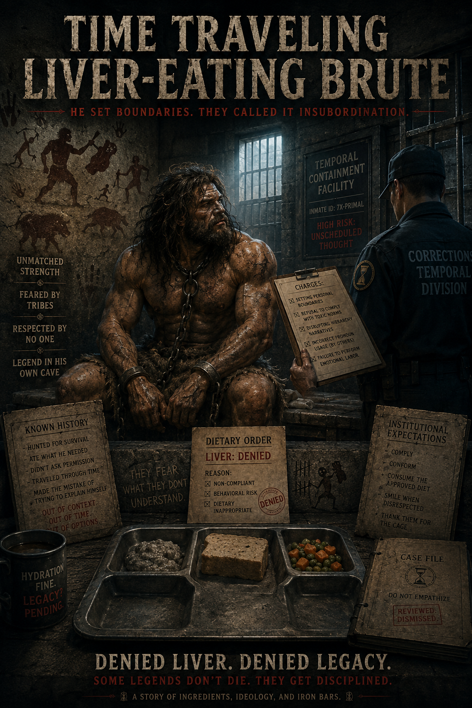
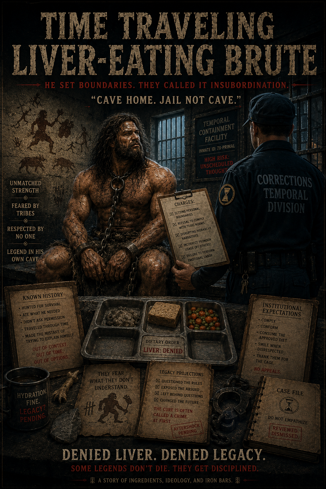
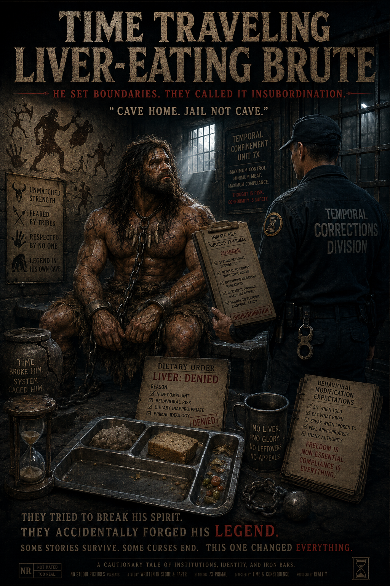
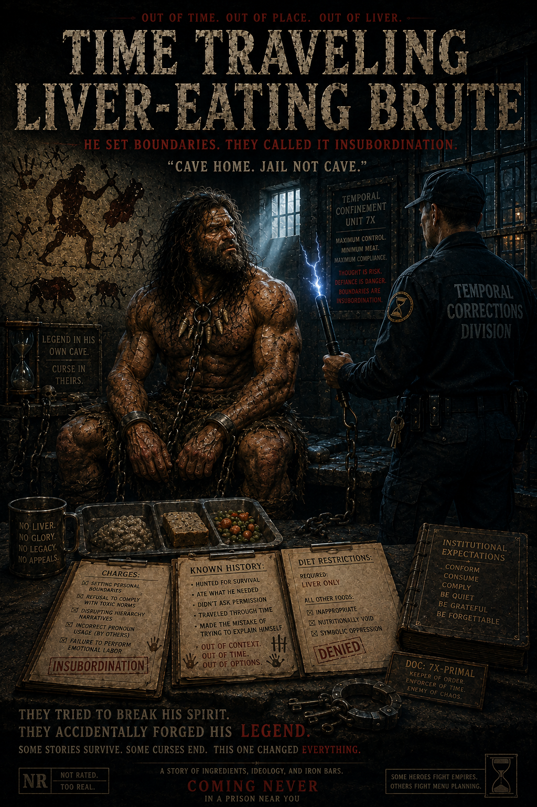

Status
Restitution ending selected as primary. Earlier prison arc versions remain as progression history in the same folder.
Candidate meme entry
A macho myth moves from punishment theater to restitution: land rights, cave autonomy, and free liver as a deadpan dignity reset.

Restitution ending selected as primary. Earlier prison arc versions remain as progression history in the same folder.




This meme now reads as a full arc: first, boundary panic and punitive control theater; then restitution where autonomy is recognized. The joke is still institutional absurdity, but the endpoint demonstrates that dignity can be restored with concrete rights, not slogans.